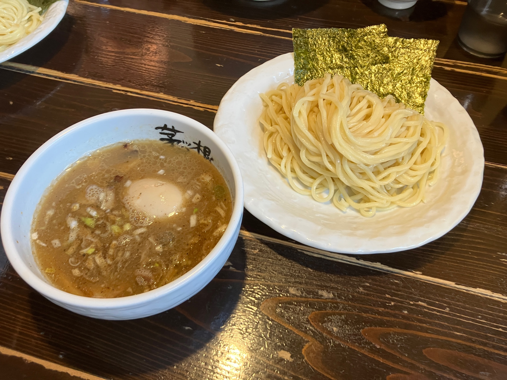
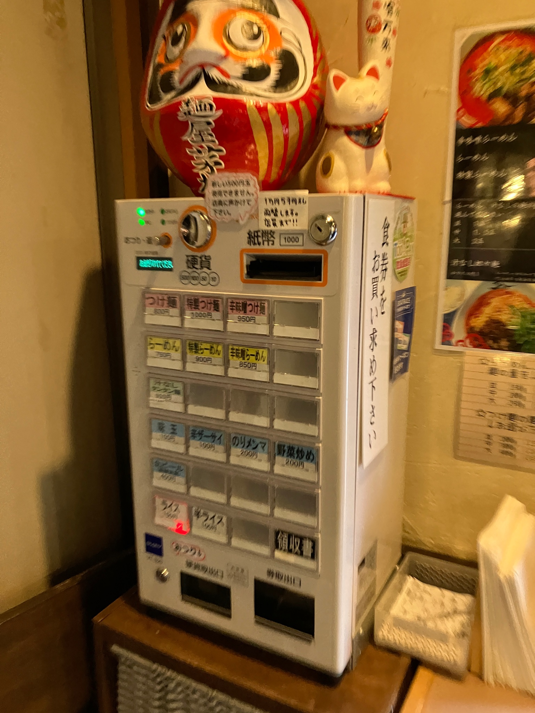

  2005年創業の茅根。今でも地元住民に愛され、昼時は行列ができるほどの人気店。もちもちとした中太麺と、魚介出汁のパンチが絶品。店員さんも明るく、昔ながらの雰囲気が味わえます。
もちもちとした麺が、麺によく絡まります。
なんといっても、魚介スープのパンチが効いています。濃厚ながらも後味はあっさりとしていて、麺を啜る手が止まりません。その中にも
チャーシューの存在感がしっかりとあり味に
飽きません。
辛味噌らーめんは茅根の中太麺と赤味噌が
ベストマッチしています。炙られたチャーシューの旨味と赤味噌の辛さが癖になること
間違いなし｡
らーめんは、つけ麺とは違い、スープがなめらかで、魚介の深みを感じます。こってり過ぎず、薄過ぎず、丁度いいバランスです。すべての食材に食べごたえがあり、気がつけば完食している一杯。これからの寒い時期に温まりたい人に
ピッタリです。
※味玉は、「特製」または「味玉」を注文したときのみ、ついてきます。
| ・らーめん | 価格 |
|---|---|
| らーめん | 750円 |
| 特製らーめん | 900円 |
| 辛味噌らーめん | 850円 |
| 汁なし坦々麺(小ライスつき) | 900円 |
| ・つけめん | 価格 |
| つけめん | 800円 |
| 特製つけめん | 1000円 |
| 辛味噌つけめん | 950円 |
| ・トッピング＆サイドメニュー | 価格 |
| のりメンマ | 200円 |
| やさい | 200円 |
| 味玉 | 100円 |
| 辛ザーサイ | 100円 |
| 半ライス | 100円 |
| ライス | 150円 |
| 半ライス・ライスにプラス50円でチャーシュー丼 | 50円 |
| ・ドリンク | 価格 |
| キリン淡麗生 | 400円 |